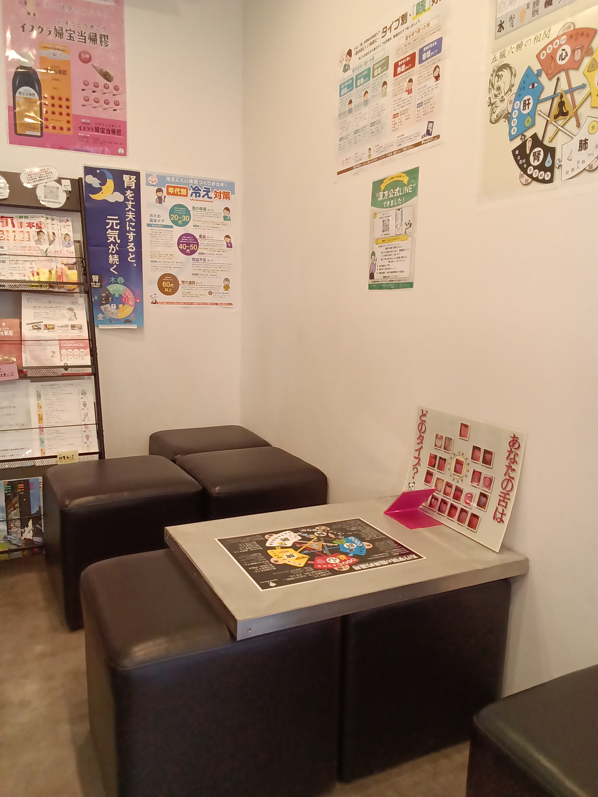

CONCERNS
下記のような不調は、漢方が得意とする領域です。ひとつでも心当たりがあれば、ぜひお声がけください。
ABOUT THE CONSULTATION
COST
※体質・症状により異なります。詳しくはご相談時にご説明いたします。
HOW IT WORKS

お電話、またはたくみ薬局 漢方公式LINEからご予約ください。子宝相談の方で、基礎体温表や婦人科の検査結果をお持ちの場合は、当日ご持参ください。
初回は体質チェックのアンケートにご記入いただきます。舌の状態も拝見しますので、当日はコーヒーなど舌に色がつく飲食物はお控えください。
体質やお悩みに合わせて、イスクラ漢方の中からぴったりの一品をご提案し、お薬をお渡しします。
服用中の気になることは、公式LINEでお気軽にご相談ください。